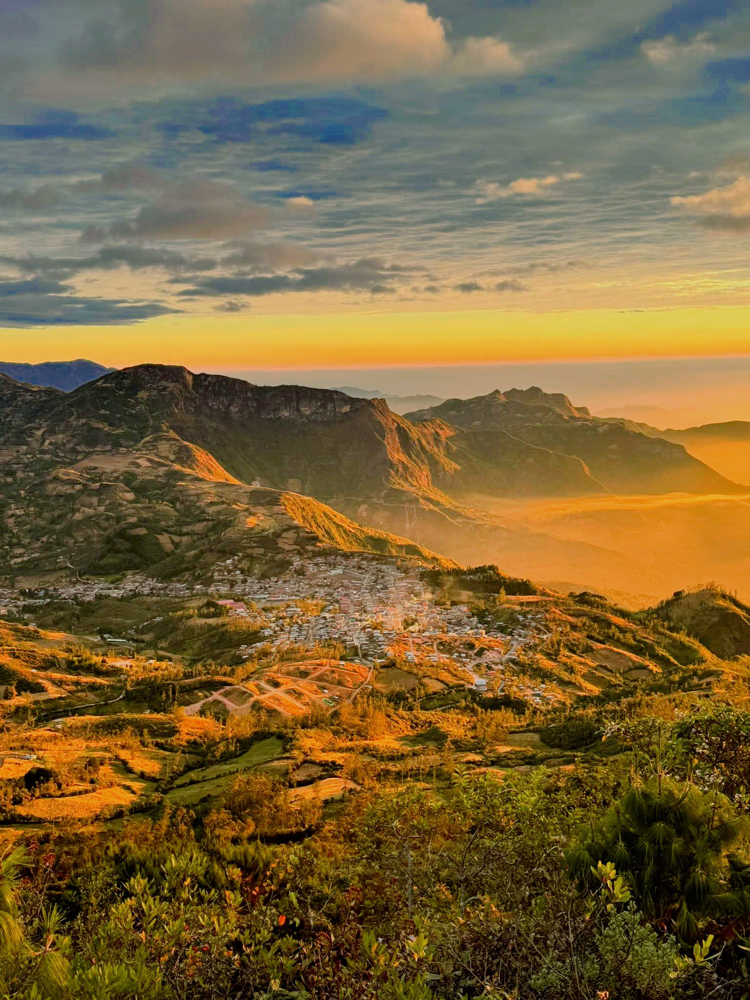

Piura, Perú
HUARMACA
La Capital del Cielo
Bienvenido a un paraíso escondido en la sierra de Piura. Descubre sus paisajes sagrados, tradiciones milenarias y la hospitalidad de su gente.

2,186
metros de altitud
18°C
clima promedio
+40,000
habitantes
4 hrs
desde Piura
¿Por qué visitar Huarmaca?
Naturaleza Pura
Bosques de neblina, cascadas cristalinas y lagunas escondidas te esperan en cada rincón.
Cultura Ancestral
Tradiciones que perduran por generaciones, fiestas patronales y danzas típicas.
Sabores Únicos
Gastronomía serrana auténtica con ingredientes frescos cultivados en la zona.
Nuestra Ubicación
Región
Piura, Perú
Provincia
Huancabamba
Cómo llegar
Desde Piura: Ruta Piura - Canchaque - Huarmaca (4 horas aprox.)
Transporte
Buses Interprovinciales, Combis y Minibuses
¿Listo para tu próxima aventura?
Huarmaca te espera con los brazos abiertos. Planifica tu viaje y vive una experiencia inolvidable.